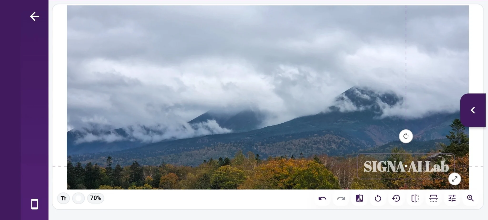
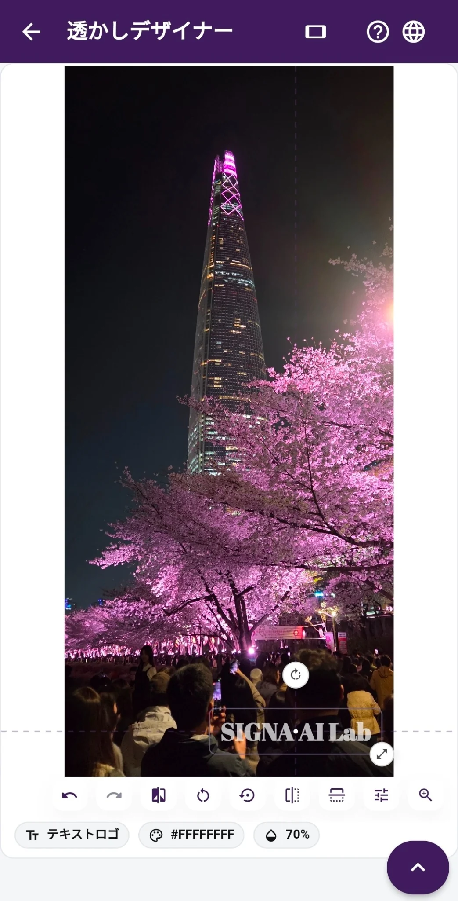

01 · PROTECT
縦写真でも横写真でも、
透かしの位置は思いどおりに。
ウォーターマークデザイナーは、写真の向きに合わせて編集画面を切り替えます。文字やロゴの書体・色・大きさ・不透明度・配置を調整。基本機能は無料で、最大12枚をまとめて編集できます。写真ごとに位置を変えたり、お気に入りのデザインを保存して使い回したりすることも可能です。Proでは追加フォントをダウンロードできます。不可視のSIGNA信号を同時に入れるのは、オプションを有効にした場合だけです。
基本機能は無料 · 縦写真・横写真に対応 · 最大12枚 · 1枚ずつ位置調整 · デザイン保存 · Proの追加フォント
共有前のウォーターマークはどう決める？ →